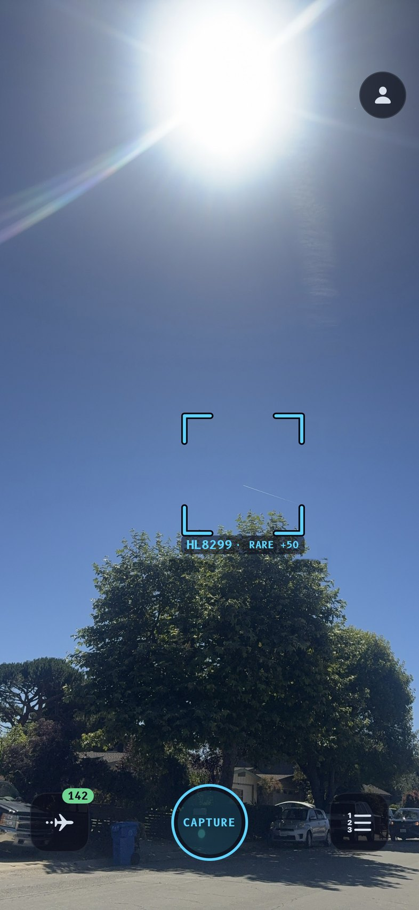
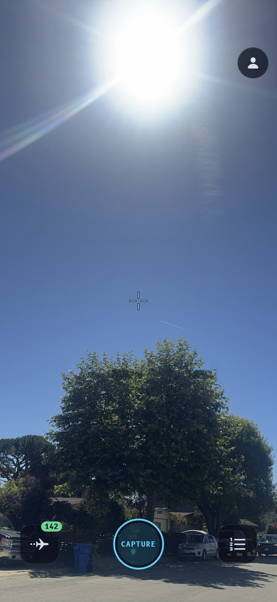
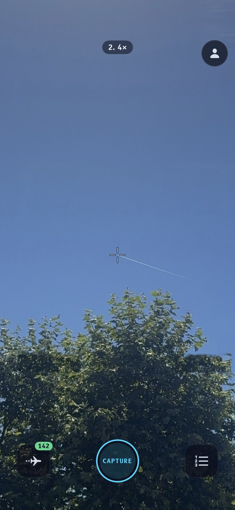
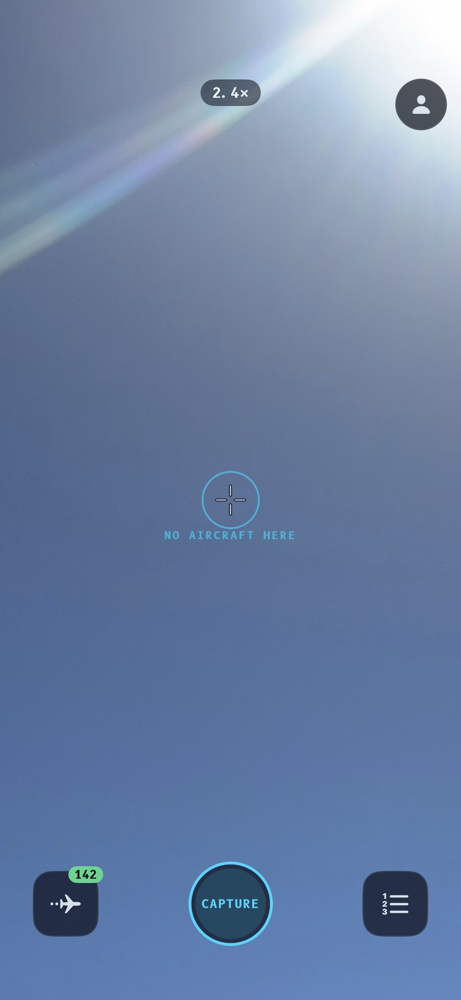
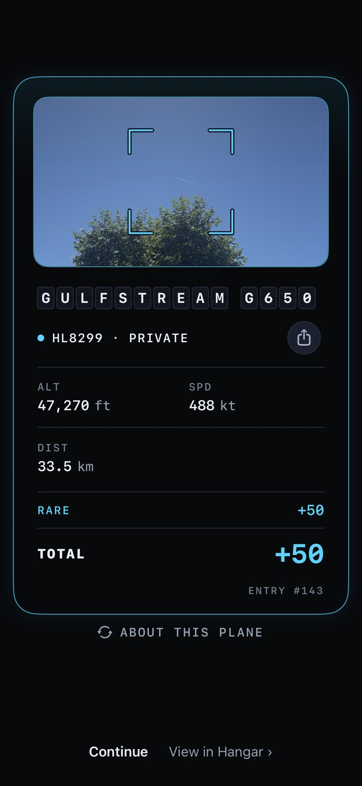
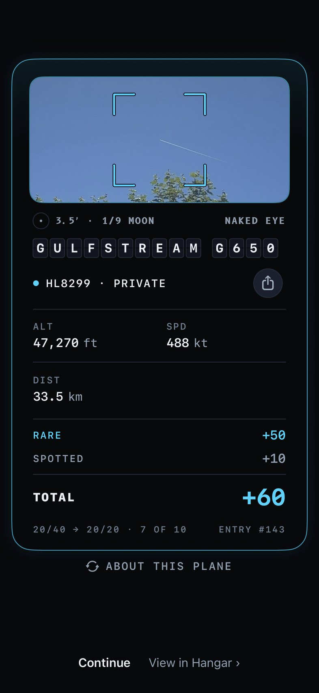
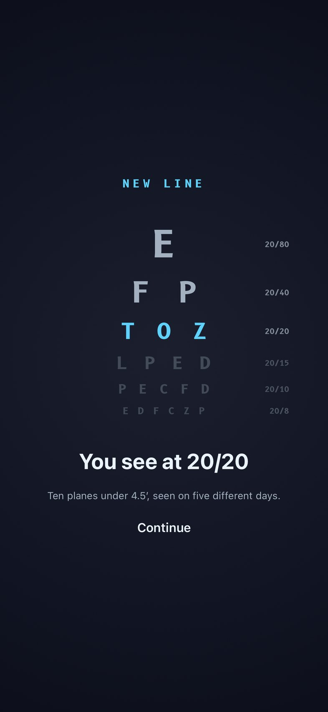
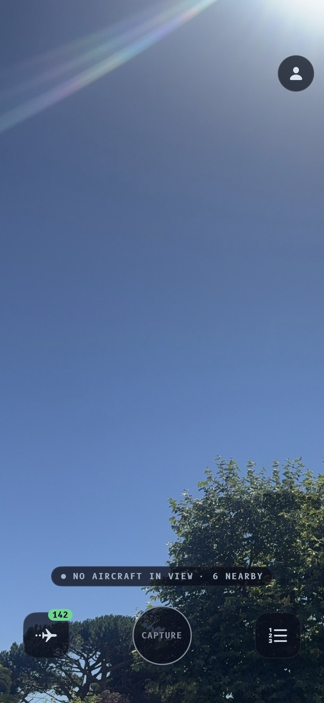
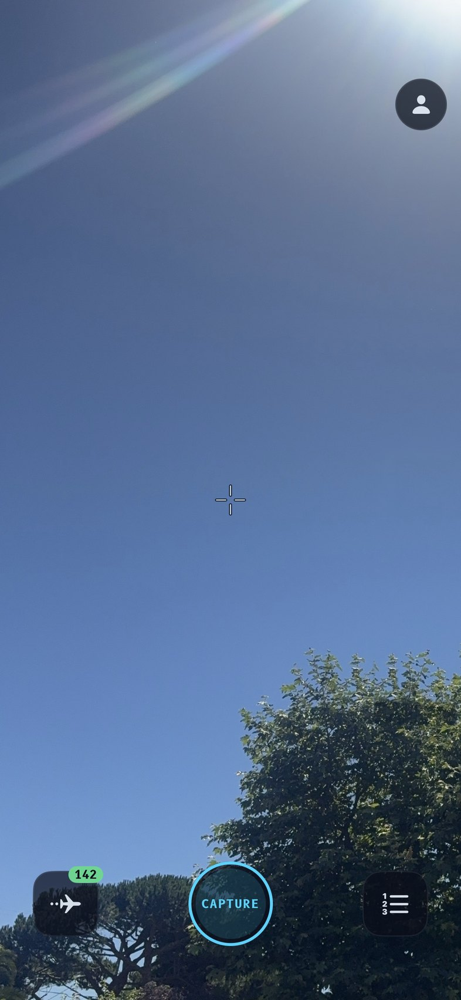

<title>Naked Eye</title>
<meta name="claude:viewport-fit-sides" content="cover">
<link rel="preconnect" href="https://fonts.googleapis.com">
<link rel="stylesheet" href="https://fonts.googleapis.com/css2?family=Atkinson+Hyperlegible:ital,wght@0,400;0,700;1,400&family=B612+Mono:wght@400;700&display=swap">
<style>
/* Layout: one reading column; phones shown at true 393 pt width in pairs that wrap to one per row on a phone. */
:root {
  --paper: #F3F6F8;
  --ink: #0E1620;
  --muted: #4A5866;
  --rule: #CBD5DE;
  --accent: #006E96;      /* the app's cyan, darkened to read on paper */
  --panel: #FFFFFF;
  --body: "Atkinson Hyperlegible", "Helvetica Neue", Arial, sans-serif;
  --mono: "B612 Mono", ui-monospace, Menlo, monospace;
}
@media (prefers-color-scheme: dark) { :root:not([data-theme="light"]) {
  --paper: #0A0E1A; --ink: #E8F4FF; --muted: #A0B0C0; --rule: #232C38; --accent: #00D4FF; --panel: #121827; color-scheme: dark } }
:root[data-theme="dark"] { --paper: #0A0E1A; --ink: #E8F4FF; --muted: #A0B0C0; --rule: #232C38; --accent: #00D4FF; --panel: #121827; color-scheme: dark }

body { background: var(--paper); color: var(--ink); font: 17px/1.55 var(--body);
  padding-left: max(16px, env(safe-area-inset-left, 0px)); padding-right: max(16px, env(safe-area-inset-right, 0px)); }
main { max-width: 860px; margin: 0 auto; padding-block: 40px 80px; display: flex; flex-direction: column; gap: 56px; }
section { display: flex; flex-direction: column; gap: 16px; }
.prose { max-width: 64ch; display: flex; flex-direction: column; gap: 12px; }
p { margin: 0; }
h1, h2 { margin: 0; text-wrap: balance; line-height: 1.15; }
h1 { font-size: 44px; letter-spacing: -0.01em; }
h2 { font-size: 26px; }
.eyebrow { font: 700 12px/1 var(--mono); letter-spacing: 0.14em; text-transform: uppercase; color: var(--accent); }
.lede { font-size: 20px; color: var(--ink); }
.muted { color: var(--muted); }
.pair { display: flex; flex-wrap: wrap; gap: 24px; }
figure { margin: 0; display: flex; flex-direction: column; gap: 10px; width: 393px; max-width: 100%; }
figure img { width: 393px; max-width: 100%; height: auto; border-radius: 26px; display: block; border: 1px solid var(--rule); }
figcaption { font-size: 15px; color: var(--muted); }
figcaption b { color: var(--ink); font-family: var(--mono); font-size: 12px; letter-spacing: 0.1em; text-transform: uppercase; display: block; margin-bottom: 2px; }
.tablewrap { overflow-x: auto; }
table { border-collapse: collapse; font-size: 15px; min-width: 420px; }
th, td { text-align: left; padding: 8px 18px 8px 0; border-bottom: 1px solid var(--rule); vertical-align: top; }
th { font: 700 11px/1.2 var(--mono); letter-spacing: 0.1em; text-transform: uppercase; color: var(--muted); }
td.n { font-family: var(--mono); font-variant-numeric: tabular-nums; white-space: nowrap; }
ul { margin: 0; padding-left: 20px; display: flex; flex-direction: column; gap: 8px; max-width: 64ch; }
.formula { font: 15px/1.6 var(--mono); background: var(--panel); border: 1px solid var(--rule); border-radius: 12px; padding: 14px 16px; overflow-x: auto; }
.note { font-size: 15px; color: var(--muted); border-top: 1px solid var(--rule); padding-top: 14px; max-width: 64ch; }
</style>

<main>
  <header class="prose">
    <span class="eyebrow">Tailspot · reward spotting</span>
    <h1>Naked Eye</h1>
    <p class="lede">Planes the app doesn't label become the game. You find a speck yourself, aim, and press. Tailspot names it after the press, and the catch scores by how faint it was.</p>
    <p class="muted">Every screen below is real SwiftUI from the app, rendered over a real catch from your phone: HL8299, a Gulfstream G650 at 33.5 km and 3.5′, shot at 1×. The bracket baked into that photo was painted out. The crosshair, size line, SPOTTED row and eye chart are the proposal; everything else is the shipping UI.</p>
  </header>

  <section>
    <span class="eyebrow">The camera</span>
    <h2>Nothing points at the speck</h2>
    <div class="pair">
      <figure><figcaption><b>Today</b>The app finds the plane for you. You confirm it.</figcaption></figure>
      <figure><figcaption><b>Naked Eye</b>Same sky, same moment. A hairline crosshair is the only new mark, and it never reacts to planes. The contrail head is above the tree, a little right of centre.</figcaption></figure>
    </div>
    <div class="pair">
      <figure><figcaption><b>Aimed at 2.4×</b>You pinch in and put the speck on the crosshair. No tap needed. Press Capture.</figcaption></figure>
      <figure><figcaption><b>A miss</b>A press on empty sky gets today's quiet ripple: no haptic, no card. A few misses in a minute make the next catch ineligible for spot points, without blocking it.</figcaption></figure>
    </div>
  </section>

  <section>
    <span class="eyebrow">The reveal</span>
    <h2>The card says how hard that was</h2>
    <div class="pair">
      <figure><figcaption><b>Labelled catch</b>Unchanged. A plane the app pointed out scores what it always has.</figcaption></figure>
      <figure><figcaption><b>Naked-eye catch</b>The photo crops in onto your speck. A quiet size line under it reads 3.5′, a ninth of the moon, and marks it NAKED EYE. The ledger adds SPOTTED +10. The foot shows progress toward the next eye-chart line, where the streak stamp sits today.</figcaption></figure>
    </div>
  </section>

  <section>
    <span class="eyebrow">The long game</span>
    <h2>An eye chart you climb slowly</h2>
    <div class="pair">
      <figure><figcaption><b>New line</b>Shown once, after the reveal, in the trophy-unlock style. One double haptic, no glow.</figcaption></figure>
      <div class="prose" style="flex:1 1 300px;min-width:0">
        <p>Your rank is the faintest line you've earned. It never decays. Each line asks for more catches, fainter ones, on more separate days, so it can't be farmed in one afternoon. It shows on your profile and the leaderboard, never on the camera.</p>
        <div class="tablewrap"><table>
          <tr><th>Line</th><th>To earn it</th></tr>
          <tr><td class="n">20/80</td><td>3 catches under 8′</td></tr>
          <tr><td class="n">20/40</td><td>6 under 6′, on 3 days</td></tr>
          <tr><td class="n">20/20</td><td>10 under 4.5′, on 5 days</td></tr>
          <tr><td class="n">20/15</td><td>10 under 3.5′, on 7 days</td></tr>
          <tr><td class="n">20/10</td><td>5 under 2.5′</td></tr>
          <tr><td class="n">20/8</td><td>3 under 1.8′</td></tr>
        </table></div>
        <p class="muted">For scale: in the last 60 days, catches of planes the app had hidden had a median size of 5.4′, and the faintest tenth were under 3.4′. Only 22 catches, by 4 people, came in near 1.7′.</p>
      </div>
    </div>
  </section>

  <section>
    <span class="eyebrow">Also removed</span>
    <h2>Counts stop giving planes away</h2>
    <div class="pair">
      <figure><figcaption><b>Today</b>"6 nearby" and a greyed Capture both tell you whether to keep looking.</figcaption></figure>
      <figure><figcaption><b>Naked Eye</b>No count. Capture always looks armed. System states (scanning, reconnecting, no data) still show.</figcaption></figure>
    </div>
  </section>

  <section class="prose">
    <span class="eyebrow">Scoring</span>
    <h2>Fainter pays more, on top of rarity</h2>
    <p>Spot points are added to the usual base, never multiplied by rarity. The server works out the size itself from the stored positions and a wingspan per type, so the phone never sends a score.</p>
    <div class="formula">spot = 5 × round(2 × clamp(log2(8 / arcmin), 0, 3))</div>
    <div class="tablewrap"><table>
      <tr><th>Apparent size</th><th>Spot points</th><th>What it looks like</th></tr>
      <tr><td class="n">8′ or more</td><td class="n">+0</td><td>Easy: low and close</td></tr>
      <tr><td class="n">5.6′</td><td class="n">+5</td><td>A typical hidden plane</td></tr>
      <tr><td class="n">4′</td><td class="n">+10</td><td>A contrail head at 30 km</td></tr>
      <tr><td class="n">2.8′</td><td class="n">+15</td><td>Hard</td></tr>
      <tr><td class="n">2′</td><td class="n">+20</td><td>Very hard</td></tr>
      <tr><td class="n">1′ or less</td><td class="n">+30</td><td>The cap</td></tr>
    </table></div>
    <p>A catch earns spot points only if the app hadn't labelled the plane before you pressed, you weren't spraying presses, and the compass was trustworthy. The cap is 10 such catches a day.</p>
  </section>

  <section class="prose">
    <span class="eyebrow">Risks</span>
    <h2>What could go wrong</h2>
    <ul>
      <li><b>The compass picks the plane.</b> A press with no label is matched to the nearest hidden plane within about 4°, or wider when the compass is unsure. A bad heading can name the wrong plane, which hits "is the catch real?" directly. Track Keep/Discard on these catches separately.</li>
      <li><b>First catches could get harder.</b> Hiding faint labels and the nearby count changes the feel for everyone. Ship it behind a PostHog flag next to the catch-rule flag, keep the steering pill for people with zero catches, and compare first-catch rate.</li>
      <li><b>Wingspans decide fairness.</b> One wrong wingspan makes a type trivially easy or impossible. Seed the 42 card families carefully and give no spot points to unknown types.</li>
      <li><b>A modded client could farm it.</b> At most +30 on 10 catches a day, and rank credit goes through a nightly geometry check.</li>
    </ul>
  </section>

  <section class="prose">
    <span class="eyebrow">Build</span>
    <h2>Server first, then the phone</h2>
    <ul>
      <li>Backend: a wingspan per type, spot columns on each catch, scoring version 9 from a cutover date so old catches don't change, and the eye-chart rank on the profile endpoint.</li>
      <li>iOS, behind a flag: match an unlabelled press to a plane, record whether the plane was labelled before the press, the crosshair, hide faint labels and the nearby count.</li>
      <li>iOS reveal: crop onto the speck, the size line, the SPOTTED row, the eye-chart strip, and the rank-up screen.</li>
      <li>Later: a faintest record per plane family, so the commons in your Hangar are worth chasing again.</li>
    </ul>
    <p class="note">Picked from nine concepts by two judges, one for your taste and one for whether it can be built and cheated. Runners-up: a blind ten-shot round you play against friends (later, as a Challenge), a per-family faintest-record book (folded in as the later phase), and a separate "cold scope" mode (its zoom-in reveal and moon line were kept).</p>
  </section>
</main>
